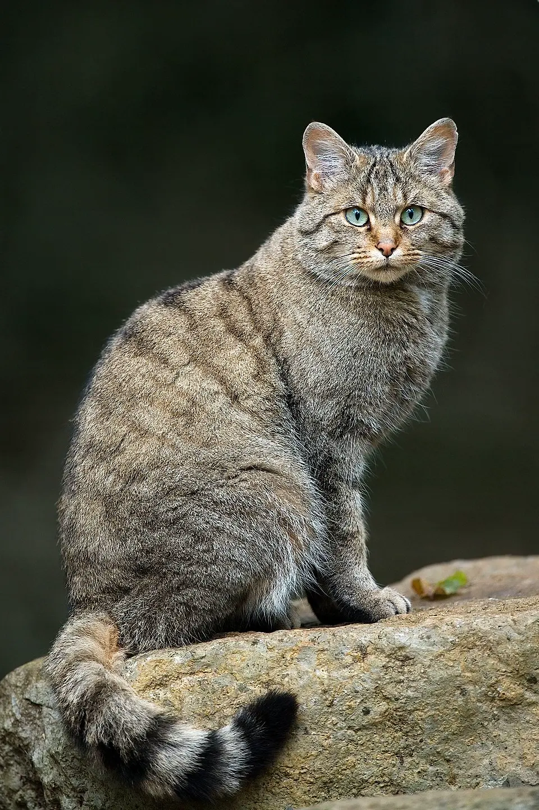

My brother is a conservation biologist studying endangered carnivore populations in Portugal. For his thesis defense, he asked me to draw the possible habitat distribution of the European wildcat—on of his favorite felids.
These cats look a lot like feral cats but are on average bigger and stouter, with longer fur and bushier tails. They also have distinct striped patterns. Because they can mate with domestic cats and have hybrid kitties, sightings or captures usually need genetic testing to distinguish them. 
Interbreeding, loss of habitat, and shootings, have made European wildcats harder to spot. I hope this illustration helps introduce more people to these furry fellows and some of the conservation efforts trying to protect them.